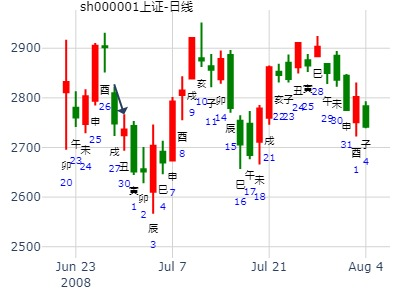

华源发展是否有投机价值？次周涨到17.26元
时间: 2001-01-07
干支: 庚辰年己丑月庚午日 (旬空: 戌亥 )
小畜静卦
腾蛇 ▅▅▅▅▅ 兄弟卯木
勾陈 ▅▅▅▅▅ 子孙巳火
朱雀 ▅▅ ▅▅ 妻财未土 应
青龙 官鬼酉金▅▅▅▅▅ 妻财辰土
玄武 ▅▅▅▅▅ 兄弟寅木
白虎 ▅▅▅▅▅ 父母子水 世
世爻日破不影响。
风生水起：江西铜业1月走势。风天小畜静卦
时间: 2015-01-05 12时16分
干支: 甲午年丙子月辛巳日 (旬空: 申酉 )
小畜静卦
腾蛇 ▅▅▅▅▅ 兄弟卯木
勾陈 ▅▅▅▅▅ 子孙巳火
朱雀 ▅▅ ▅▅ 妻财未土 应
青龙 官鬼酉金▅▅▅▅▅ 妻财辰土
玄武 ▅▅▅▅▅ 兄弟寅木
白虎 ▅▅▅▅▅ 父母子水 世
主帖标题: 上证指数阳历一月份行情走势？
占事:上证指数丑月趋势？
起卦方式：铜钱手动摇卦
时间: 2021-01-04
干支: 庚子年戊子月壬子日 (旬空: 寅卯 )
小畜静卦
白虎 ▅▅▅▅▅ 兄弟卯木
腾蛇 ▅▅▅▅▅ 子孙巳火
勾陈 ▅▅ ▅▅ 妻财未土 应
朱雀 ▅▅▅▅▅ 妻财辰土
青龙 ▅▅▅▅▅ 兄弟寅木
玄武 ▅▅▅▅▅ 父母子水 世
2010年2月25日正峰占上证指数今日涨跌？得小畜静卦
庚寅年 戊寅月 丙午日 壬辰时 旬空:【寅卯】 星期四 手工指定
【六兽】 【伏神】 风天小畜【巽宫】
青龙 ▅▅▅▅▅ 兄弟辛卯木
玄武 ▅▅▅▅▅ 子孙辛巳火
白虎 ▅▅ ▅▅ 妻财辛未土 应
螣蛇 官鬼辛酉金 ▅▅▅▅▅ 妻财甲辰土
勾陈 ▅▅▅▅▅ 兄弟甲寅木
朱雀 ▅▅▅▅▅ 父母甲子水 世
应爻旺于月日，世爻月破日墓？？？

女 占事：300369在2015年的走势
公历起卦时间：2015年2月22日12时4分 (手工指定)
干支：乙未年 戊寅月 己巳日 庚午时 （日空：戌亥）
巽宫：风天小畜 巽宫：风天小畜
六神 伏神 本 卦 变 卦
勾陈 兄弟辛卯木 ▅▅▅▅▅ 兄弟辛卯木 ▅▅▅▅▅
朱雀 子孙辛巳火 ▅▅▅▅▅ 子孙辛巳火 ▅▅▅▅▅
青龙 妻财辛未土 ▅▅ ▅▅ 应 妻财辛未土 ▅▅ ▅▅ 应
玄武 官鬼辛酉金 妻财甲辰土 ▅▅▅▅▅ 妻财甲辰土 ▅▅▅▅▅
白虎 兄弟甲寅木 ▅▅▅▅▅ 兄弟甲寅木 ▅▅▅▅▅
腾蛇 父母甲子水 ▅▅▅▅▅ 世 父母甲子水 ▅▅▅▅▅ 世
主帖标题: 测2020.2.12-2.14哪日是顶？
测2020.2.12-2.14日顶z xiangxian?？
男 占事：没填
公历起卦时间：2020年2月15日18时40分 (电脑自动)
干支：庚子年 戊寅月 戊子日 辛酉时 （日空：午未）
神煞：驿马－寅 桃花－酉 日禄－巳 贵人－丑，未
巽宫：风天小畜 巽宫：风天小畜
六神 伏神 本 卦 变 卦
朱雀 兄弟辛卯木 ▅▅▅▅▅ 兄弟辛卯木 ▅▅▅▅▅
青龙 子孙辛巳火 ▅▅▅▅▅ 子孙辛巳火 ▅▅▅▅▅
玄武 妻财辛未土 ▅▅ ▅▅ 应 妻财辛未土 ▅▅ ▅▅ 应
白虎 官鬼辛酉金 妻财甲辰土 ▅▅▅▅▅ 妻财甲辰土 ▅▅▅▅▅
螣蛇 兄弟甲寅木 ▅▅▅▅▅ 兄弟甲寅木 ▅▅▅▅▅
勾陈 父母甲子水 ▅▅▅▅▅ 世 父母甲子水 ▅▅▅▅▅ 世
注：唐龙这贴同一件事，反复电脑自动卦，游戏卦神，仅供参考。
主帖标题: 试测易天股份2.18-2.28哪日是顶？
哪日是顶z？
出生：2020 年 性别：男 占事：没填
排卦：元亨利贞网六爻在线排盘系统 http://www.china95.net
公历起卦时间：2020年2月18日18时22分 (电脑自动)
干支：庚子年 戊寅月 辛卯日 丁酉时 （日空：午未）
神煞：驿马－巳 桃花－子 日禄－酉 贵人－寅，午
巽宫：风天小畜 巽宫：风天小畜
六神 伏神 本 卦 变 卦
螣蛇 兄弟辛卯木 ▅▅▅▅▅ 兄弟辛卯木 ▅▅▅▅▅
勾陈 子孙辛巳火 ▅▅▅▅▅ 子孙辛巳火 ▅▅▅▅▅
朱雀 妻财辛未土 ▅▅ ▅▅ 应 妻财辛未土 ▅▅ ▅▅ 应
青龙 官鬼辛酉金 妻财甲辰土 ▅▅▅▅▅ 妻财甲辰土 ▅▅▅▅▅
玄武 兄弟甲寅木 ▅▅▅▅▅ 兄弟甲寅木 ▅▅▅▅▅
白虎 父母甲子水 ▅▅▅▅▅ 世 父母甲子水 ▅▅▅▅▅ 世
主帖标题: 上证卯月月卦涨跌收集
1，金眼牛
占事：2022年3月大盘涨跌？
公历起卦时间：2022年2月28日15时57分 (手工指定)
干支：壬寅年 壬寅月 壬子日 戊申时 （日空：寅卯）
神煞：驿马－寅 桃花－酉 日禄－亥 贵人－卯，巳
巽宫：风天小畜 巽宫：风天小畜
六神 伏神 本 卦 变 卦
白虎 兄弟辛卯木 ▅▅▅▅▅ 兄弟辛卯木 ▅▅▅▅▅
螣蛇 子孙辛巳火 ▅▅▅▅▅ 子孙辛巳火 ▅▅▅▅▅
勾陈 妻财辛未土 ▅▅ ▅▅ 应 妻财辛未土 ▅▅ ▅▅ 应
朱雀 官鬼辛酉金 妻财甲辰土 ▅▅▅▅▅ 妻财甲辰土 ▅▅▅▅▅
青龙 兄弟甲寅木 ▅▅▅▅▅ 兄弟甲寅木 ▅▅▅▅▅
玄武 父母甲子水 ▅▅▅▅▅ 世 父母甲子水 ▅▅▅▅▅ 世
小畜静卦。辉煌科技到2月中旬2周。金玉堂
时间：2023年2月1日16点8分 星期三
干支：壬寅年 癸丑月 庚寅日 甲申时
丑月 庚寅日（旬空：午未）
六神 藏爻 风天小畜 巽宫
腾蛇 ■■■■■■兄弟卯木
勾陈 ■■■■■■子孙巳火
朱雀 ■■ ■■妻财未土 应
青龙 官鬼酉金■■■■■■妻财辰土
玄武 父母亥水■■■■■■兄弟寅木
白虎 妻财丑土■■■■■■父母子水 世
看看用友今年表现
2017年3月12日20时1分 (手工指定)
干支：丁酉年 癸卯月 戊戌日 壬戌时 （日空：辰巳）
巽宫：风天小畜 巽宫：风天小畜
六神 伏神 本 卦 变 卦
朱雀 兄弟辛卯木 ▅▅▅▅▅ 兄弟辛卯木 ▅▅▅▅▅
青龙 子孙辛巳火 ▅▅▅▅▅ 子孙辛巳火 ▅▅▅▅▅
玄武 妻财辛未土 ▅▅ ▅▅ 应 妻财辛未土 ▅▅ ▅▅ 应
白虎 官鬼辛酉金 妻财甲辰土 ▅▅▅▅▅ 妻财甲辰土 ▅▅▅▅▅
腾蛇 兄弟甲寅木 ▅▅▅▅▅ 兄弟甲寅木 ▅▅▅▅▅
勾陈 父母甲子水 ▅▅▅▅▅ 世 父母甲子水 ▅▅▅▅▅ 世
主帖标题: 2016年辰月上证指数走势
公历时间：2016年4月7日16时4分
农历时间：丙申年 三月 初一日 申时
干 支：丙申年 壬辰月 己未日 壬申时
旬 空：辰巳 午未 (子丑) 戌亥
神 煞：驿马─巳 桃花─子 日禄─午 贵人─子，申
巽宫：风天小畜
六神 伏 神 【本 卦】
勾陈 ▄▄▄▄▄ 兄弟辛卯木
朱雀 ▄▄▄▄▄ 子孙辛巳火
青龙 ▄▄ ▄▄ 妻财辛未土 应
玄武 官鬼辛酉金 ▄▄▄▄▄ 妻财甲辰土
白虎 ▄▄▄▄▄ 兄弟甲寅木
螣蛇 ▄▄▄▄▄ 父母甲子水 世
辰月大盘卦

主帖标题: 上证大盘巳月份行情走势如何？（有更新）
占事：农历巳月份炒股财运如何？
公历起卦时间：2020年4月24日12时22分 (手工指定)
干支：庚子年 庚辰月 丁酉日 丙午时 （日空：辰巳）
神煞：驿马－亥 桃花－午 日禄－午 贵人－酉，亥
巽宫：风天小畜 巽宫：风天小畜
六神 伏神 本 卦 变 卦
青龙 兄弟辛卯木 ▅▅▅▅▅ 兄弟辛卯木 ▅▅▅▅▅
玄武 子孙辛巳火 ▅▅▅▅▅ 子孙辛巳火 ▅▅▅▅▅
白虎 妻财辛未土 ▅▅ ▅▅ 应 妻财辛未土 ▅▅ ▅▅ 应
螣蛇 官鬼辛酉金 妻财甲辰土 ▅▅▅▅▅ 妻财甲辰土 ▅▅▅▅▅
勾陈 兄弟甲寅木 ▅▅▅▅▅ 兄弟甲寅木 ▅▅▅▅▅
朱雀 父母甲子水 ▅▅▅▅▅ 世 父母甲子水 ▅▅▅▅▅ 世
1，上爻兄弟卯木，辰月有气，日建冲克为暗动。克财。,
2，辰月摇卦，原像为兄弟劫财。不赚反赔钱。
上证指数2021.4.26甲辰一 -4.30戊申五哪日顶？
出生：2021 年 性别：男 占事：没填
排卦：元亨利贞网六爻在线排盘系统 https://www.china95.net
公历起卦时间：2021年4月27日15时30分 (电脑自动)
干支：辛丑年 壬辰月 乙巳日 甲申时 （日空：寅卯）
神煞：驿马－亥 桃花－午 日禄－卯 贵人－子，申
巽宫：风天小畜 巽宫：风天小畜
六神 伏神 本 卦 变 卦
玄武 兄弟辛卯木 ▅▅▅▅▅ 兄弟辛卯木 ▅▅▅▅▅
白虎 子孙辛巳火 ▅▅▅▅▅ 子孙辛巳火 ▅▅▅▅▅
螣蛇 妻财辛未土 ▅▅ ▅▅ 应 妻财辛未土 ▅▅ ▅▅ 应
勾陈 官鬼辛酉金 妻财甲辰土 ▅▅▅▅▅ 妻财甲辰土 ▅▅▅▅▅
朱雀 兄弟甲寅木 ▅▅▅▅▅ 兄弟甲寅木 ▅▅▅▅▅
青龙 父母甲子水 ▅▅▅▅▅ 世 父母甲子水 ▅▅▅▅▅ 世
风天小畜，2011.5.13－5.18，IF1105四日戌亥空走势，小阳线（ferrari铜钱）
排卦：元亨利贞网六爻在线排盘系统 http://www.china95.net
公历起卦时间：2011年5月12日22时58分 (手工指定)
干支：辛卯年 癸巳月 丁卯日 辛亥时 （日空：戌亥）
神煞：驿马－巳 桃花－子 日禄－午 贵人－酉，亥
巽宫：风天小畜 巽宫：风天小畜
青龙 兄弟辛卯木 ▅▅▅▅▅ 兄弟辛卯木 ▅▅▅▅▅
玄武 子孙辛巳火 ▅▅▅▅▅ 子孙辛巳火 ▅▅▅▅▅
白虎 妻财辛未土 ▅▅ ▅▅ 应 妻财辛未土 ▅▅ ▅▅ 应
腾蛇 官鬼辛酉金 妻财甲辰土 ▅▅▅▅▅ 妻财甲辰土 ▅▅▅▅▅
勾陈 兄弟甲寅木 ▅▅▅▅▅ 兄弟甲寅木 ▅▅▅▅▅
朱雀 父母甲子水 ▅▅▅▅▅ 世 父母甲子水 ▅▅▅▅▅ 世

风生水起 占事：600381 下周 起卦方式：手动摇卦
公历时间：2015年5月2日9时40分
干 支：乙未年 庚辰月 戊寅日 丁巳时
旬 空：辰巳 申酉 (申酉) 子丑
巽宫：风天小畜
六神 伏 神 【本 卦】
朱雀 ▄▄▄▄▄ 兄弟辛卯木
青龙 ▄▄▄▄▄ 子孙辛巳火
玄武 ▄▄ ▄▄ 妻财辛未土 应
白虎 官鬼辛酉金 ▄▄▄▄▄ 妻财甲辰土
螣蛇 ▄▄▄▄▄ 兄弟甲寅木
勾陈 ▄▄▄▄▄ 父母甲子水 世
主帖标题: 北方华创5.26甲戌-5.28丙子五哪日顶？
北方华创5.27-5.28丙子五哪日顶？
男 占事：没填
公历起卦时间：2021年5月28日9时34分 (电脑自动)
干支：辛丑年 癸巳月 丙子日 癸巳时 （日空：申酉）
巽宫：风天小畜 巽宫：风天小畜
六神 伏神 本 卦 变 卦
青龙 兄弟辛卯木 ▅▅▅▅▅ 兄弟辛卯木 ▅▅▅▅▅
玄武 子孙辛巳火 ▅▅▅▅▅ 子孙辛巳火 ▅▅▅▅▅
白虎 妻财辛未土 ▅▅ ▅▅ 应 妻财辛未土 ▅▅ ▅▅ 应
螣蛇 官鬼辛酉金 妻财甲辰土 ▅▅▅▅▅ 妻财甲辰土 ▅▅▅▅▅
勾陈 兄弟甲寅木 ▅▅▅▅▅ 兄弟甲寅木 ▅▅▅▅▅
朱雀 父母甲子水 ▅▅▅▅▅ 世 父母甲子水 ▅▅▅▅▅ 世

主帖标题: [大盘指数] 预测股市大盘未来趋势综合贴！
转帖：金眼牛 占事：2008年7月大盘涨跌?
公历时间：2008年6月30日15时5分 星期一
干支：戊子年 戊午月 辛丑日 丙申时 (旬空：辰巳)神煞：驿马—亥 桃花—午 日禄—酉 贵人—寅，午
巽宫：风天小畜
六神 伏 神 【本 卦】
螣蛇 ▅▅▅▅▅ 兄弟辛卯木
勾陈 ▅▅▅▅▅ 子孙辛巳火
朱雀 ▅▅ ▅▅ 妻财辛未土 应
青龙 官鬼辛酉金 ▅▅▅▅▅ 妻财甲辰土
玄武 ▅▅▅▅▅ 兄弟甲寅木
白虎 ▅▅▅▅▅ 父母甲子水 世

性别：男 占事：大盘午月前二周走势？
起卦方式：手动摇卦 易经股市论坛 www.yijingstock.com 在线排盘系统
公历时间：2014年6月6日12时34分
干 支：甲午年 庚午月 戊申日 戊午时 （寅卯空）
巽宫：风天小畜
六神 伏 神 【本 卦】
朱雀 ▄▄▄▄▄ 兄弟辛卯木
青龙 ▄▄▄▄▄ 子孙辛巳火
玄武 ▄▄ ▄▄ 妻财辛未土 应
白虎 官鬼辛酉金 ▄▄▄▄▄ 妻财甲辰土
螣蛇 ▄▄▄▄▄ 兄弟甲寅木
勾陈 ▄▄▄▄▄ 父母甲子水 世
第一周涨，第二周跌。
世爻月破，不影响第一周的应财克世，涨。
第二周的午日仍是大涨。午日子丑空了，但仍然涨。（因为午日一天暂时冲实了世爻不空，但过后就空了）
剩下的日子里子丑空，世爻旬空不受财克，一路跌。
（起卦日：申冲了空兄弟，是否有影响）
主帖标题: 6个月
公历起卦时间：2022年6月13日10时44分 (在线摇卦)
农历：壬寅年五月十五日巳时
芒种：2022年06月06日00时58分
小暑：2022年07月07日11时22分
干支：壬寅年 丙午月 丁酉日 乙巳时 （日空：辰巳）
神煞：驿马－亥 桃花－午 日禄－午 贵人－酉，亥
巽宫：风天小畜 巽宫：风天小畜
六神 伏神 本 卦 变 卦
青龙 兄弟辛卯木 ▅▅▅▅▅ 兄弟辛卯木 ▅▅▅▅▅
玄武 子孙辛巳火 ▅▅▅▅▅ 子孙辛巳火 ▅▅▅▅▅
白虎 妻财辛未土 ▅▅ ▅▅ 应 妻财辛未土 ▅▅ ▅▅ 应
螣蛇 官鬼辛酉金 妻财甲辰土 ▅▅▅▅▅ 妻财甲辰土 ▅▅▅▅▅
勾陈 兄弟甲寅木 ▅▅▅▅▅ 兄弟甲寅木 ▅▅▅▅▅
朱雀 父母甲子水 ▅▅▅▅▅ 世 父母甲子水 ▅▅▅▅▅ 世
主帖标题: 2008年7月大盘涨跌卦!
干支：戊子年 戊午月 辛丑日 丙申时 (旬空：辰巳
)神煞：驿马—亥 桃花—午 日禄—酉 贵人—寅，午
时间: 2008-07-01
干支: 戊子年戊午月壬寅日丙申时 (旬空: 辰巳 )
小畜静卦
白虎 ▅▅▅▅▅ 兄弟卯木
腾蛇 ▅▅▅▅▅ 子孙巳火
勾陈 ▅▅ ▅▅ 妻财未土 应
朱雀 ▅▅▅▅▅ 妻财辰土
青龙 ▅▅▅▅▅ 兄弟寅木
玄武 ▅▅▅▅▅ 父母子水 世
占事: 酉月什么样的股票会涨呢
起卦方式：手动摇卦 周易天地www.64gua.com六爻线上排盘系统
公历时间：2014年7月21日9时4分
干支：甲午年 辛未月 癸巳日 丁巳时
旬空：辰巳 戌亥 午未 子丑
神煞：驿马─亥 桃花─午 日禄─子 贵人─巳，卯
巽宫：风天小畜
六神 伏 神 【本 卦】
白虎 ▄▄▄▄▄ 兄弟辛卯木
螣蛇 ▄▄▄▄▄ 子孙辛巳火
勾陈 ▄▄ ▄▄ 妻财辛未土 应
朱雀 官鬼辛酉金 ▄▄▄▄▄ 妻财甲辰土
青龙 ▄▄▄▄▄ 兄弟甲寅木
玄武 ▄▄▄▄▄ 父母甲子水 世
占事：000510 - 7月
公历起卦时间：2020年7月1日8时14分 (在线摇卦)
农历：庚子年五月十一日辰时
芒种：2020年06月05日13时22分
小暑：2020年07月06日23时46分
干支：庚子年 壬午月 乙巳日 庚辰时 （日空：寅卯）
神煞：驿马－亥 桃花－午 日禄－卯 贵人－子，申
巽宫：风天小畜 巽宫：风天小畜
六神 伏神 本 卦 变 卦
玄武 兄弟辛卯木 ▅▅▅▅▅ 兄弟辛卯木 ▅▅▅▅▅
白虎 子孙辛巳火 ▅▅▅▅▅ 子孙辛巳火 ▅▅▅▅▅
螣蛇 妻财辛未土 ▅▅ ▅▅ 应 妻财辛未土 ▅▅ ▅▅ 应
勾陈 官鬼辛酉金 妻财甲辰土 ▅▅▅▅▅ 妻财甲辰土 ▅▅▅▅▅
朱雀 兄弟甲寅木 ▅▅▅▅▅ 兄弟甲寅木 ▅▅▅▅▅
青龙 父母甲子水 ▅▅▅▅▅ 世 父母甲子水 ▅▅▅▅▅ 世
风天小畜，2010.8.9－8.31，002201九鼎新材走势，暴涨（ferrari铜钱）
1---小畜 白鸟衔饵，鸣呼其子。斡枝张翅，来从其母。伯仲叔季，尤贺举手。
公历起卦时间：2010年8月6日14时38分 (在线摇卦)
干支：庚寅年 癸未月 戊子日 己未时 （日空：午未）
神煞：驿马－寅 桃花－酉 日禄－巳 贵人－丑，未
小畜静卦
朱雀 ▅▅▅▅▅ 兄弟卯木
青龙 ▅▅▅▅▅ 子孙巳火
玄武 ▅▅ ▅▅ 妻财未土 应
白虎 ▅▅▅▅▅ 妻财辰土
腾蛇 ▅▅▅▅▅ 兄弟寅木
勾陈 ▅▅▅▅▅ 父母子水 世
马后炮：
1。未土值月。 旺。
2。世爻父母为自己，临子日，旺。
3。结论：世旺财兴，且应克世，即财克世，就是财来就我。大发。

作者： 土升金囿 占事：有色板块在八九十这三个月的行情如何
公历起卦时间：2014年8月2日20时57分 (手工指定)
干支：甲午年 辛未月 乙巳日 丙戌时 （日空：寅卯）
神煞：驿马－亥 桃花－午 日禄－卯 贵人－子，申
巽宫：风天小畜 巽宫：风天小畜
六神 伏神 本 卦 变 卦
玄武 兄弟辛卯木 ▅▅▅▅▅ 兄弟辛卯木 ▅▅▅▅▅
白虎 子孙辛巳火 ▅▅▅▅▅ 子孙辛巳火 ▅▅▅▅▅
腾蛇 妻财辛未土 ▅▅ ▅▅ 应 妻财辛未土 ▅▅ ▅▅ 应
勾陈 官鬼辛酉金 妻财甲辰土 ▅▅▅▅▅ 妻财甲辰土 ▅▅▅▅▅
朱雀 兄弟甲寅木 ▅▅▅▅▅ 兄弟甲寅木 ▅▅▅▅▅
青龙 父母甲子水 ▅▅▅▅▅ 世 父母甲子水 ▅▅▅▅▅ 世
《周易》——风天小畜 巽上乾下
兄弟卯旬空。一般是好（但是怕申月冲空，反而实）
财爻得日月助。
但世爻太弱，有可能财旺世弱，财旺克身？
姓名： 男 占事：焦煤1501 804-808
起卦方式：手动摇卦 易经股市论坛
公历时间：2014年8月4日8时32分
干 支：甲午年 辛未月 丁未日 甲辰时
旬 空：辰巳 戌亥 (寅卯) 寅卯
巽宫：风天小畜
六神 伏 神 【本 卦】
青龙 ▄▄▄▄▄ 兄弟辛卯木
玄武 ▄▄▄▄▄ 子孙辛巳火
白虎 ▄▄ ▄▄ 妻财辛未土 应
螣蛇 官鬼辛酉金 ▄▄▄▄▄ 妻财甲辰土
勾陈 ▄▄▄▄▄ 兄弟甲寅木
朱雀 ▄▄▄▄▄ 父母甲子水 世
4日开始涨。财克世属于涨的类型。
旺财克世（未戌均涨）
申酉冲实兄弟寅卯，小涨。
亥冲子孙巳火日破，跌。
寅卯日兄弟出空，跌。（助此日开始世爻空）
世爻空，世爻无法享受，开始转斩。
主帖标题: 宏昌科技301008今如何
出生：2021 年 性别：男 占事：没填
排卦：元亨利贞网六爻在线排盘系统 https://www.china95.net
公历起卦时间：2021年8月4日9时15分 (1角手摇卦)
干支：辛丑年 乙未月 甲申日 己巳时 （日空：午未）
神煞：驿马－寅 桃花－酉 日禄－寅 贵人－丑，未
巽宫：风天小畜
六神 伏神 本 卦
玄武 兄弟辛卯木 ▅▅▅▅▅
白虎 子孙辛巳火 ▅▅▅▅▅
螣蛇 妻财辛未土 ▅▅ ▅▅ 应
勾陈 官鬼辛酉金 妻财甲辰土 ▅▅▅▅▅
朱雀 兄弟甲寅木 ▅▅▅▅▅
青龙 父母甲子水 ▅▅▅▅▅ 世
主帖标题: 9月27-30日大盘涨跌卦
占事：9月27-30日大盘涨跌？
公历时间：2010年9月21日15时12分 星期二
干支：庚寅年 乙酉月 甲戌日 壬申时 (旬空：申酉)
神煞：驿马—申 桃花—卯 日禄—寅 贵人—丑，未
巽宫：风天小畜
六神 伏 神 【本 卦】
玄武 ▅▅▅▅▅ 兄弟辛卯木
白虎 ▅▅▅▅▅ 子孙辛巳火
螣蛇 ▅▅ ▅▅ 妻财辛未土 应
勾陈 官鬼辛酉金 ▅▅▅▅▅ 妻财甲辰土
朱雀 ▅▅▅▅▅ 兄弟甲寅木
青龙 ▅▅▅▅▅ 父母甲子水 世
再 人 上证指数9月27-30日行情预测？
起卦时间：2010年09月23日17时35分起卦方式：手摇起卦
干支：庚寅年 乙酉月 丙子日 丁酉时
旬空：午未 午未 申酉 辰巳
六神 伏神 巽宫：风天小畜
青龙 ▅▅▅▅▅ 兄弟辛卯木
玄武 ▅▅▅▅▅ 子孙辛巳火
白虎 ▅▅ ▅▅ 妻财辛未土 应
滕蛇 ▅▅▅▅▅ 妻财甲辰土 （伏 官鬼辛酉金）
勾陈 ▅▅▅▅▅ 兄弟甲寅木
朱雀 ▅▅▅▅▅ 父母甲子水 世
马后炮：
世爻月生临日，旺。应爻财爻长生于日，需待时而动。（未日发动)
辰日三爻财值日克世，涨。
未日应爻财爻值日，来克世爻，财克世，大涨。
占事: 下周 大盘909-912
起卦方式：手动摇卦 周易天地 www.64gua.com六爻线上排盘系统
公历时间：2014年9月7日8时48分
干支：甲午年 壬申月 辛巳日 壬辰时
旬空：辰巳 戌亥 申酉 午未
巽宫：风天小畜
六神 伏 神 【本 卦】
螣蛇 ▄▄▄▄▄ 兄弟辛卯木
勾陈 ▄▄▄▄▄ 子孙辛巳火
朱雀 ▄▄ ▄▄ 妻财辛未土 应
青龙 官鬼辛酉金 ▄▄▄▄▄ 妻财甲辰土
玄武 ▄▄▄▄▄ 兄弟甲寅木
白虎 ▄▄▄▄▄ 父母甲子水 世
风天小畜静卦，郑重起卦占本周上证指数走势。涨。
时间: 2014-09-22
干支: 甲午年癸酉月丙申日 (旬空: 辰巳 )
小畜静卦
青龙 ▅▅▅▅▅ 兄弟卯木
玄武 ▅▅▅▅▅ 子孙巳火
白虎 ▅▅ ▅▅ 妻财未土 应
腾蛇 官鬼酉金▅▅▅▅▅ 妻财辰土
勾陈 ▅▅▅▅▅ 兄弟寅木
朱雀 ▅▅▅▅▅ 父母子水 世
申日大跌（机理不详）
辰己空，则财空，子孙空。
等戌日冲实财爻。
亥日冲实子孙。（但亥亦助父母）
皇氏集团在十月-金铜钱
时间: 2024-09-28
干支: 甲辰年癸酉月乙未日 (旬空: 辰巳 )
小畜静卦
玄武 ▅▅▅▅▅ 兄弟卯木
白虎 ▅▅▅▅▅ 子孙巳火
腾蛇 ▅▅ ▅▅ 妻财未土 应
勾陈 官鬼酉金▅▅▅▅▅ 妻财辰土
朱雀 ▅▅▅▅▅ 兄弟寅木
青龙 ▅▅▅▅▅ 父母子水 世
风生水起 占事: 000756 十月份
公历时间：2014年10月9日8时12分
干支：甲午年 甲戌月 癸丑日 丙辰时
旬空：辰巳 申酉 寅卯 子丑
巽宫：风天小畜
六神 伏 神 【本 卦】
白虎 ▄▄▄▄▄ 兄弟辛卯木
螣蛇 ▄▄▄▄▄ 子孙辛巳火
勾陈 ▄▄ ▄▄ 妻财辛未土 应
朱雀 官鬼辛酉金 ▄▄▄▄▄ 妻财甲辰土
青龙 ▄▄▄▄▄ 兄弟甲寅木
玄武 ▄▄▄▄▄ 父母甲子水 世
丑未戌三刑。十月份见小顶。
应爻未土暗动，克世，财克世为涨。
核心转折点为申： 申酉日为冲实寅卯兄弟为顶。（而10日寅出空反而是小跌）
看点： 子丑世爻空照样涨
午日充实世爻子水，看涨还是跌？（马后炮是涨）
主帖标题: 第十七期预测上证指数比赛１７日到２１日
公历时间：2008年11月17日9时30分 星期一
干支：戊子年 癸亥月 辛酉日 癸巳时 (旬空：子丑)神煞：驿马—亥 桃花—午
日禄—酉 贵人—寅，午 巽宫：风天小畜 六神 伏 神 【本 卦】
螣蛇 ▅▅▅▅▅ 兄弟辛卯木
勾陈 ▅▅▅▅▅ 子孙辛巳火
朱雀 ▅▅ ▅▅ 妻财辛未土 应
青龙 官鬼辛酉金 ▅▅▅▅▅ 妻财甲辰土
玄武 ▅▅▅▅▅ 兄弟甲寅木
白虎 ▅▅▅▅▅ 父母甲子水 世 这是大盘日Ｋ线的信息！
主帖标题: 第十八期上证指数预测比赛24日到28日
公历时间：2008年11月24日9时30分 星期一农历时间：戊子年十月廿七巳时干支：戊子年 癸亥月 戊辰日 丁巳时 (旬空：戌亥)神煞：驿马—寅 桃花—酉 日禄—巳 贵人—丑，未 巽宫：风天小畜 六神 伏 神 【本 卦】 朱雀 ▅▅▅▅▅ 兄弟辛卯木 青龙 ▅▅▅▅▅ 子孙辛巳火 玄武 ▅▅ ▅▅ 妻财辛未土 应 白虎 官鬼辛酉金 ▅▅▅▅▅ 妻财甲辰土 螣蛇 ▅▅▅▅▅ 兄弟甲寅木 勾陈 ▅▅▅▅▅ 父母甲子水 世
这是上海大盘日K线的静卦信息!
性别：男 占事: 002616, 14--18运势
起卦方式：手动摇卦
公历时间：2011年11月12日
干支：辛卯年 癸亥月 辛未日
旬空：辰巳 子丑 戌亥
巽宫：风天小畜
六神 伏 神 【本 卦】
螣蛇 ▄▄▄▄▄ 兄弟辛卯木
勾陈 ▄▄▄▄▄ 子孙辛巳火
朱雀 ▄▄ ▄▄ 妻财辛未土 应
青龙 官鬼辛酉金 ▄▄▄▄▄ 妻财甲辰土
玄武 ▄▄▄▄▄ 兄弟甲寅木
白虎 ▄▄▄▄▄ 父母甲子水 世
风天小蓄，给钟Y华打工如何
时间: 2012-11-02 17:04
干支: 壬辰年庚戌月丁卯日己酉时 (旬空: 戌亥 )
小畜静卦
青龙 ▅▅▅▅▅ 兄弟卯木
玄武 ▅▅▅▅▅ 子孙巳火
白虎 ▅▅ ▅▅ 妻财未土 应
腾蛇 官鬼酉金▅▅▅▅▅ 妻财辰土
勾陈 ▅▅▅▅▅ 兄弟寅木
朱雀 ▅▅▅▅▅ 父母子水 世
男 占事：航天军工板块今天大涨吗
公历起卦时间：2013年11月6日11时41分 (电脑自动)
干支：癸巳年 壬戌月 丙子日 甲午时 （日空：申酉）
巽宫：风天小畜
青龙 兄弟辛卯木 ▅▅▅▅▅
玄武 子孙辛巳火 ▅▅▅▅▅
白虎 妻财辛未土 ▅▅ ▅▅ 应
腾蛇 官鬼辛酉金 妻财甲辰土 ▅▅▅▅▅
勾陈 兄弟甲寅木 ▅▅▅▅▅
朱雀 父母甲子水 ▅▅▅▅▅ 世